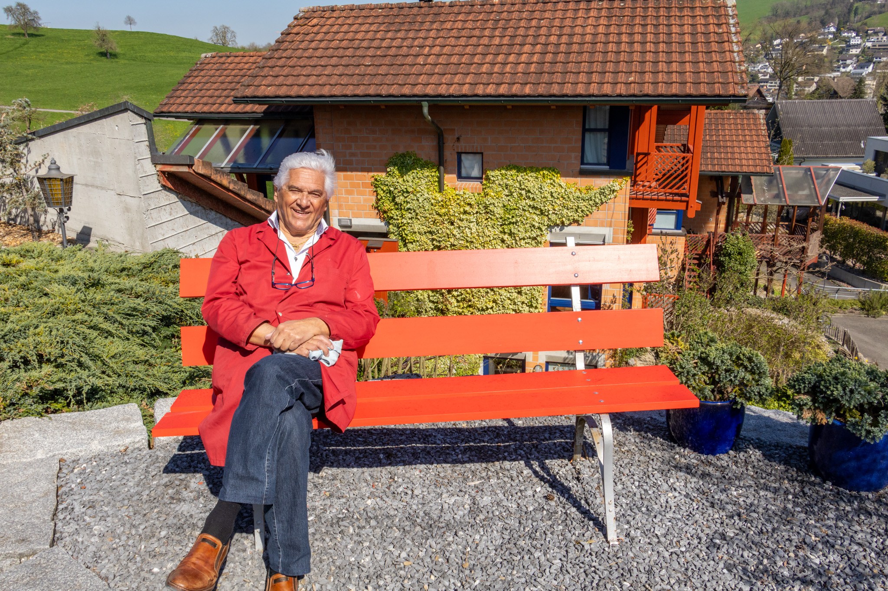

About

Über mich
Hallo, mein Name ist Mason Schindler, ich bin 16 Jahre alt und absolviere derzeit meine Ausbildung als Mediamatiker EFZ im 1. Lehrjahr. Im Rahmen des modulübergreifenden Kombiprojekts der Module HKB A, HKB B und HKB E habe ich diese Webseite gestaltet. Ziel war es, ein eigenes Fotografie-Thema zu wählen, dazu passende Bilder zu erstellen und zu bearbeiten, ein eigenes Logo zu entwickeln und schliesslich alles in eine selbst programmierte Webseite zu integrieren. Mein Thema lautet „RarCar“, eine Autohandelsfirma, welche sich auf Oldtimer spezialisiert.
Special Thanks To
Dieses Projekt widme ich meinem Grossvater Rudolf Schindler , welcher ein sehr leidenschaftlicher Auto-Sammler ist. Ich danke ihm herzlich für die Bereitstellung seiner Oldtimer und für seine Zeit und Unterstützung während der Fotoshootings.
Credits & Tools
- Kamera: Canon EOS R7
- Stativ: Manfrotto
- Webdesign: HTML & CSS (Visual Studio Code)
- Inspo Bilder: Pinterest
- Pecha-Kucha: Canva
Ünterstützende Personen
- Lehrpersonen: Rémy Niederer, Angela Imfeld, Ann-Christin Gerlach
- Bereitsteller von Autos: Rudolf Schindler
- Fahrer: Michi Schindler